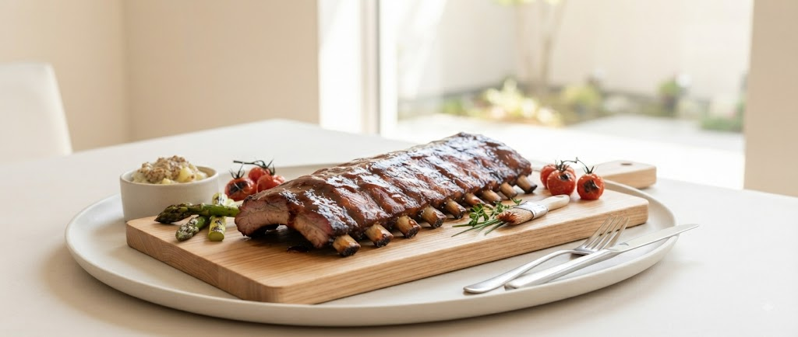
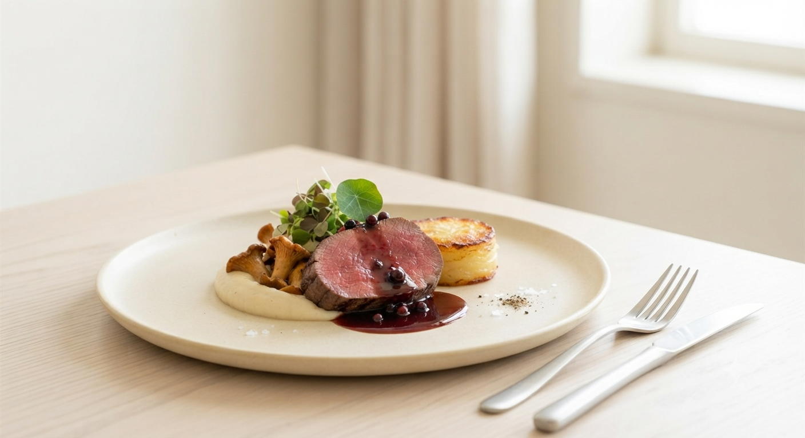
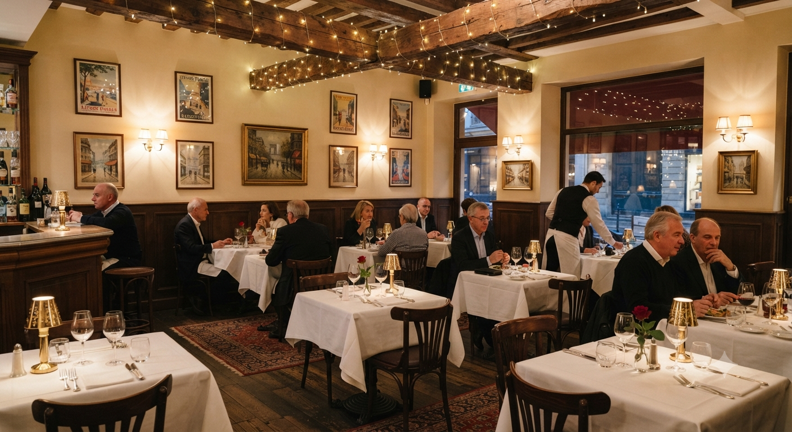
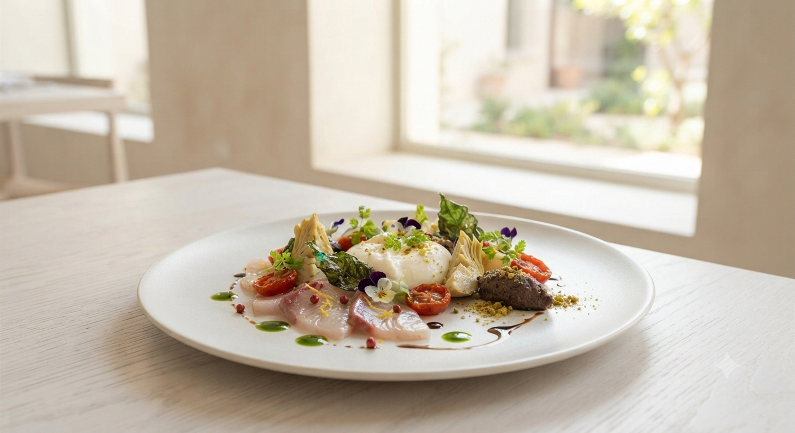
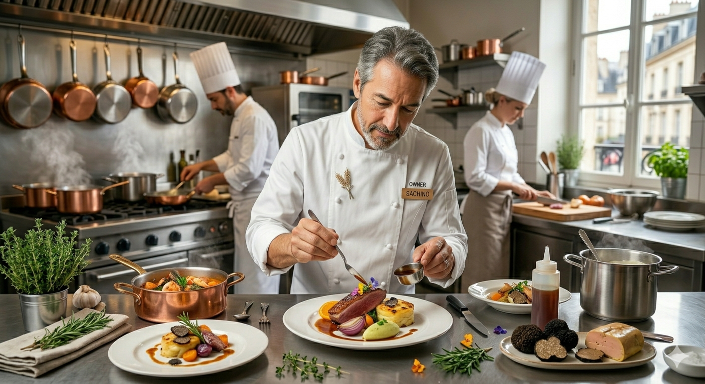

洞爺産の無農薬野菜、道産の頬肉、そして独自ルートで仕入れるトリュフ。素材の声を聴き、その魅力を最大限に引き出すのが2Platsのスタイルです。特に、時間をかけて丁寧に仕上げる「肉のスペアリブ」は、多くの美食家を虜にしています。

洞爺産の無農薬野菜や道産食肉を直送。季節ごとに表情を変える北の恵みを、フレンチの技法で昇華させます。

お洒落で明るい店内は、住宅街にひっそりと佇む隠れ家。特別な記念日はもちろん、日常を忘れるランチにも最適です。

シェフから絶賛される独自料理。色彩豊かなポタージュや、絵画のような美しい盛り付けは、一目見た瞬間に心を奪います。
訪れるすべての人に、忘れられない時間を提供したい。
お客様からいただいた温かい言葉の一部をご紹介します。
「一皿一皿が上質で、全てが美味しすぎました。最高のおもてなしを受け、素晴らしい時間を過ごせました。来年も楽しみにしています！」
BIRTHDAY DINNER
「こんな豪華で2,750円は驚きです。旅の目的の一つでしたが、期待を裏切らない素晴らしい料理。機会があれば、また必ず行きたいです。」
LUNCH VISIT

「気難しい」という声を聞くこともあるかもしれません。しかし、それは素材のベストな状態を見極め、お客様の口に運ばれるその一瞬にすべてを賭けているからです。
パンのおかわり自由、お肉とお魚の両方が愉しめるコースは、その全てが「お腹も心も満たされてほしい」というシェフの純粋な想いから。
2Platsでは、お食事の「その瞬間」だけでなく、帰宅された後も余韻を楽しんでいただける新しいおもてなしを準備しております。
ご来店日やお祝いの種類(誕生日・結婚記念日など)を刻印。本日召し上がった料理・厳選食材の産地・ソムリエおすすめのペアリング理由を記載したオリジナルの記念カードを進呈いたします。
特別な日のお食事風景を当店で撮影。その場で専用フォトスタンドとメッセージを添えて、笑顔の瞬間を形に残します。
〒070-8006 北海道旭川市神楽６条８丁目５‐３
0166-74-8133
火曜日（定休）